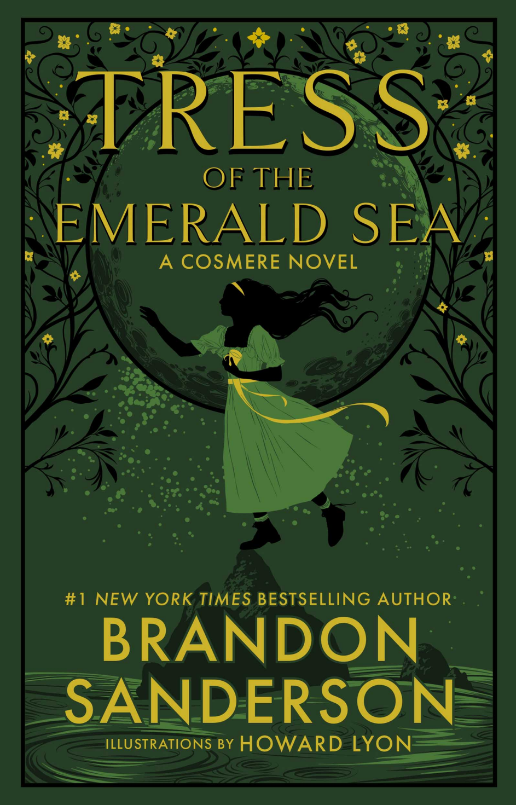

Tress of the Emerald Sea
⭐️⭐️⭐️⭐️
Format: audio (12 hours 27 minutes)
This was really enjoyable. In the middle of the book, I texted my brother to say "I kind of forget that I need to slow down on [Brandon Sanderson's] books - I enjoy them so much that I want to keep reading/listening, but then I'm sad when they're done." Such was the case here. Narrated by a whimsical character, set in a brand new world (with a fun magic system), telling a story likely appealing to many readers, this was a really fun read. For those unfamiliar with Brandon Sanderson's broader set of work, I feel like this book would stand well enough on its own, without needing to have read anything else by him to enjoy this book.
Lastly, if you listen to the book, make sure you at least flip through the physical or ebook, so you can see the variety of illustrations. They're done really well.
- Previously: Brave Companions
- Next: A Darker Shade of Magic